library(ggplot2)
library(dplyr)
library(gridExtra)
library(readr)
library(tidyr)
library(lubridate)
library(ggtext)
library(glue)Data Vis Tips with ggplot2
Tweets
Intro
Want to have impact with your analysis?
Then you need to tell a compelling story with your data.
Data vis is key to this.
8 tips for better data vis (a thread using the best data vis package around, ggplot2).
#1
Communicating analysis is an essential skill for any data scientist or analyst.
There is no point building a fancy model if your customer doesn’t understand the outcome.
It’s your job to help them understand - and data vis is crucial.
Here are 8, opinionated, tips.
#2
1. Use the right chart
The first thing I think about is what message do I want to communicate. Chart choice flows from here.
This will inform what type of data you want to show and how you want to show it.
There isn’t always a ‘right’ answer.
#3
Which chart do do you think is best here if the message I want to get across is that ideal has the largest count?
All of them communicate that but personally I like the standard bar.
chart_data <- diamonds |> count(cut) |> mutate(row_num = 1:n())
p <- ggplot(chart_data, aes(cut, n))
p_point <- p + geom_point()
p_bar <- p + geom_bar(stat = "identity")
p_stack <- p + geom_bar(aes(x = "", fill = cut), stat = "identity")
p_pie <- p_stack + coord_polar("y")
grid.arrange(p_bar, p_point, p_stack, p_pie)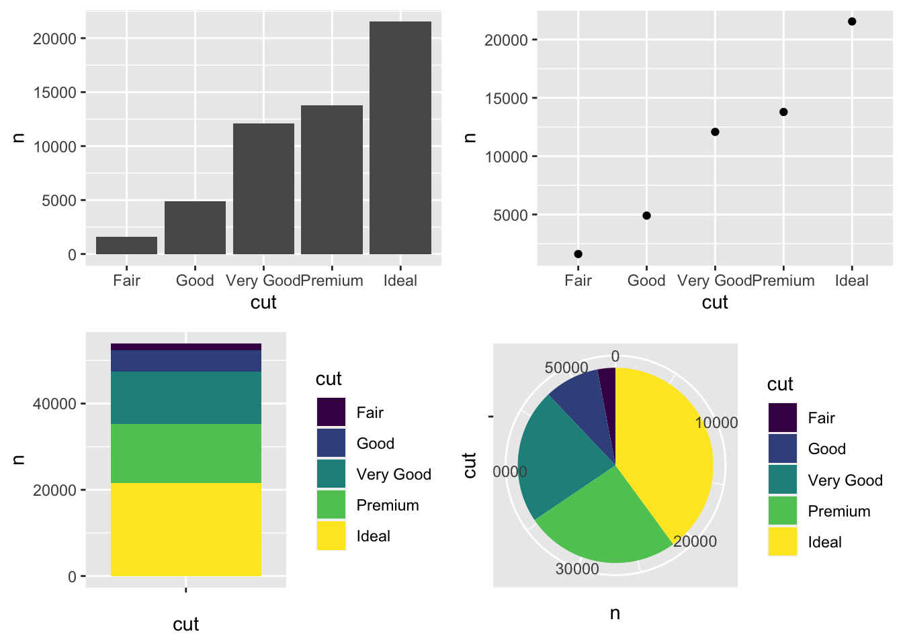
#4
2. Keep things simple
A good rule of thumb is drop anything you don’t need. The classic ggplot2 theme is a bit busy for me but I like theme minimal.
You can also drop grid lines - in this case we certainly don’t need the vertical lines and the horizontals are arguable.
p_bar_minimal <- p_bar +
theme_minimal() +
theme(panel.grid.major.x = element_blank(),
panel.grid.minor = element_blank())
grid.arrange(p_bar, p_bar_minimal, nrow = 1)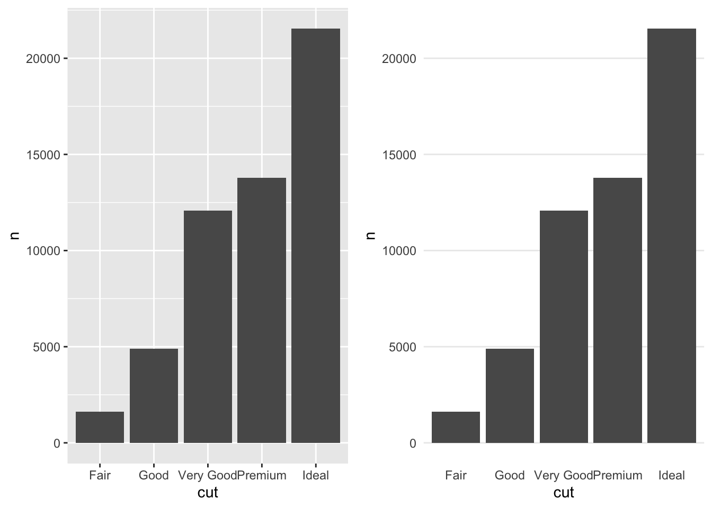
#5
3. Give things room to breathe
The first obvious thing is the x-axis labels are falling over each other.
You could:
1. Reduce the font size or text length.
2. Rotate the labels.
3. Switch the axis.
I like 3.
p_bar_rotate <- p_bar_minimal +
coord_flip() +
# Need to change the gridlines from before since we rotated
theme(panel.grid.major.y = element_blank(),
panel.grid.major.x = element_line())
grid.arrange(p_bar_minimal, p_bar_rotate, nrow = 1)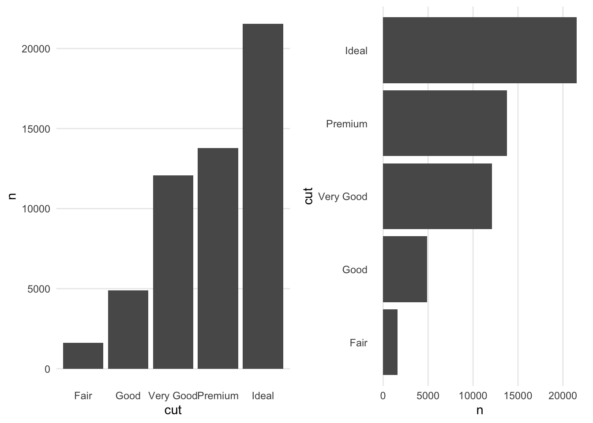
#6
At this point let’s title the chart and axis properly - give those labels a bit of room too with the margin command.
p_bar_titled <- p_bar_rotate +
# Note x and y flipped so the following seems back to front
labs(title = "Cut of various diamonds",
x = "",
y = "Count",
caption = "Data sourced from the diamonds dataset in ggplot2") +
theme(plot.title = element_text(margin = margin(t = 5, b = 10)),
axis.title.x = element_text(margin = margin(t = 15, b = 10)))
p_bar_titled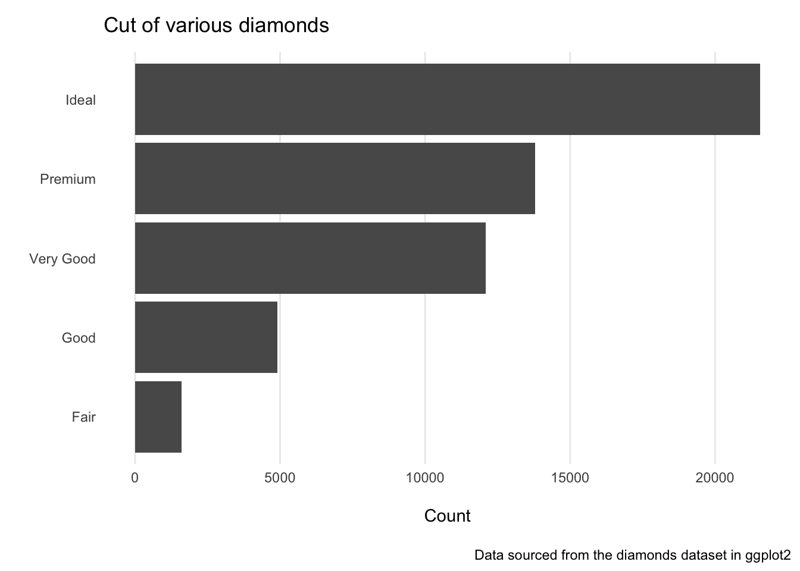
#7
4. Use colours effectively
Colours are a great way of making things look good, distinguishing data points and drawing attention to the things that matter.
But use them sparingly for maxium effect.
# Create some dummy data with a trend
make_fake_trend <- function (beta1) {
x <- 1980:1999
y <- 25 + beta1 * x + rnorm(length(x), sd = 20)
}
countries <- c("Greece", "Wales", "Scotland", "Iceland", "Ireland", "France", "England",
"Latvia", "Denmark")
fake <- tibble(year = 1980:1999)
beta1 <- 1.7 # Initialise
for (country in countries) {
fake[,country] <- make_fake_trend(beta1)
beta1 <- beta1 - 0.05
}
print(fake)# A tibble: 20 × 10
year Greece Wales Scotland Iceland Ireland France England Latvia Denmark
<int> <dbl> <dbl> <dbl> <dbl> <dbl> <dbl> <dbl> <dbl> <dbl>
1 1980 3368. 3292. 3206. 3109. 2989. 2916. 2793. 2732. 2609.
2 1981 3365. 3310. 3171. 3077. 3008. 2869. 2794. 2705. 2602.
3 1982 3411. 3288. 3204. 3127. 2980. 2912. 2796. 2697. 2600.
4 1983 3394. 3263. 3204. 3085. 2999. 2885. 2811. 2713. 2618.
5 1984 3379. 3249. 3148. 3115. 2985. 2875. 2815. 2676. 2605.
6 1985 3400. 3313. 3208. 3071. 2993. 2893. 2836. 2708. 2591.
7 1986 3400. 3288. 3193. 3083. 3008. 2916. 2807. 2703. 2574.
8 1987 3413. 3311. 3229. 3124. 3014. 2960. 2810. 2720. 2629.
9 1988 3407. 3292. 3222. 3105. 3009. 2913. 2772. 2712. 2620.
10 1989 3434. 3288. 3198. 3108. 3029. 2899. 2821. 2702. 2612.
11 1990 3406. 3301. 3207. 3088. 3010. 2920. 2810. 2717. 2600.
12 1991 3413. 3328. 3198. 3120. 3031. 2929. 2820. 2742. 2613.
13 1992 3397. 3287. 3206. 3098. 3041. 2897. 2861. 2714. 2617.
14 1993 3397. 3329. 3201. 3103. 3002. 2948. 2759. 2686. 2629.
15 1994 3398. 3310. 3214. 3127. 3026. 2906. 2814. 2752. 2633.
16 1995 3421. 3333. 3222. 3130. 3018. 2874. 2815. 2737. 2612.
17 1996 3368. 3349. 3184. 3123. 3014. 2938. 2820. 2715. 2611.
18 1997 3433. 3315. 3195. 3138. 3027. 2931. 2825. 2738. 2600.
19 1998 3429. 3269. 3180. 3112. 3029. 2928. 2839. 2725. 2630.
20 1999 3400. 3326. 3209. 3108. 3034. 2937. 2805. 2727. 2598.highlight_countries <- c("Scotland", "Wales")
fake <- pivot_longer(fake, cols = -year, names_to = "country") |>
mutate(country_other = if_else(country %in% highlight_countries, country, "Other"))
chart_colours <- rep("#D3D3D3", length(countries))
names(chart_colours) <- countries
chart_colours["Scotland"] <- "darkblue"
chart_colours["Wales"] <- "red"
names(chart_colours)[!(names(chart_colours) %in% highlight_countries)] <- "Other"
# Too many colours plot
pmess <- fake |>
ggplot(aes(x = year, y = value, colour = country, group = country)) +
geom_line() +
labs(title = "Too many colours",
x = "",
y = "Random numbers") +
theme_minimal() +
theme(plot.title = element_text(margin = margin(t = 5, b = 10)),
axis.title.x = element_text(margin = margin(t = 15, b = 10)),
panel.grid.major.x = element_blank(),
panel.grid.minor = element_blank(),
legend.position = "none")
# A better plot
pnice <- fake |>
ggplot(aes(x = year, y = value, colour = country_other, group = country)) +
geom_line() +
labs(title = "Important lines highlighted",
x = "",
y = "Random numbers") +
theme_minimal() +
theme(plot.title = element_text(margin = margin(t = 5, b = 10)),
axis.title.x = element_text(margin = margin(t = 15, b = 10)),
panel.grid.major.x = element_blank(),
panel.grid.minor = element_blank(),
legend.position = "none") +
scale_colour_manual(values = chart_colours)
grid.arrange(pmess, pnice, nrow = 1)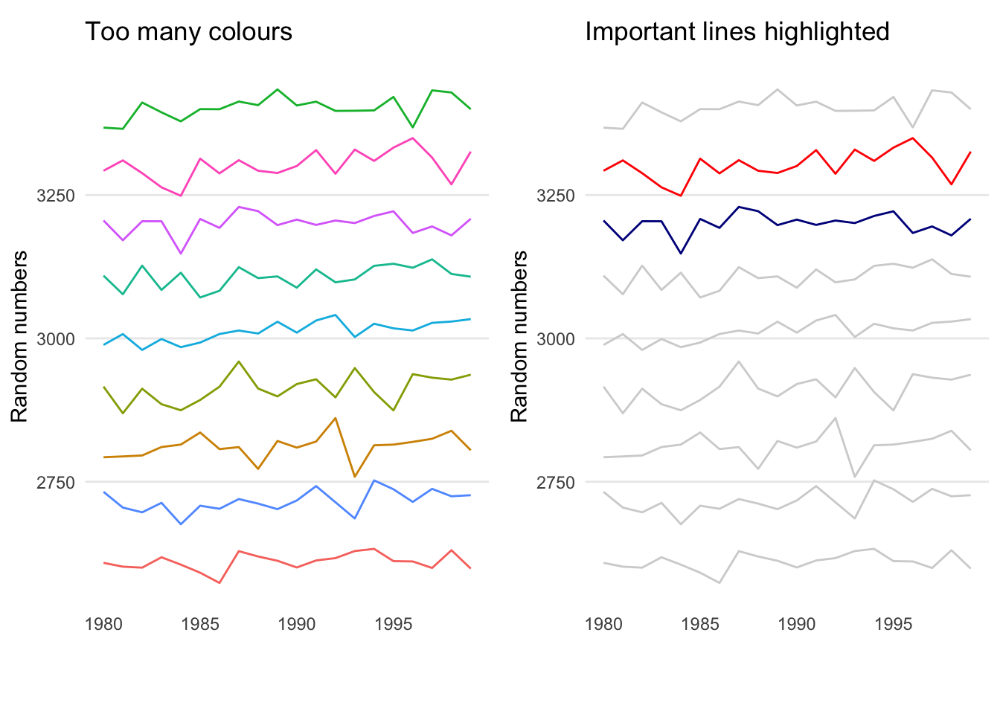
#8
WIth colours it’s important to consider accessibility. Colour blindness is common - it affects around 4.5% of the UK population, particularly men. I would guess it’s similar elsewhere.
This is a great resource for checking your palettes:
#9
And don’t use pink for women and blue for men. It’s a lazy stereotype.
#10
6. Drop the legend
Legends help interpret a chart but can sometimes confuse users.
Two great alternatives:
- Label data series directly (with the secondary axis trick)
- Use colour in your titles or subtitles with html and the ggtext package
# Label directly
latest_points <- fake |>
filter(country_other != "Other") |>
arrange(desc(year)) |>
slice(1:2)
pnice +
scale_y_continuous(
sec.axis = dup_axis(
breaks = latest_points$value,
labels = latest_points$country,
name = NULL
)
) +
labs(title = "A chart labelled directly")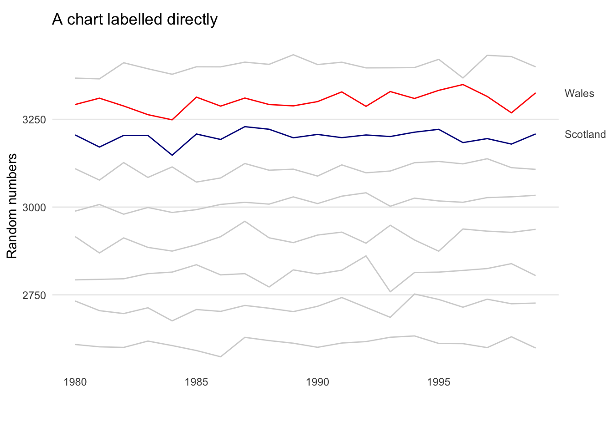
# Colouring the title
# Use html to set the colours
title_html <- glue(
"A chart showing <span style='color:{chart_colours['Wales']};'>Wales</span>
and <span style='color:{chart_colours['Scotland']};'>Scotland</span>"
)
pnice +
labs(title = title_html) +
theme(plot.title = element_markdown())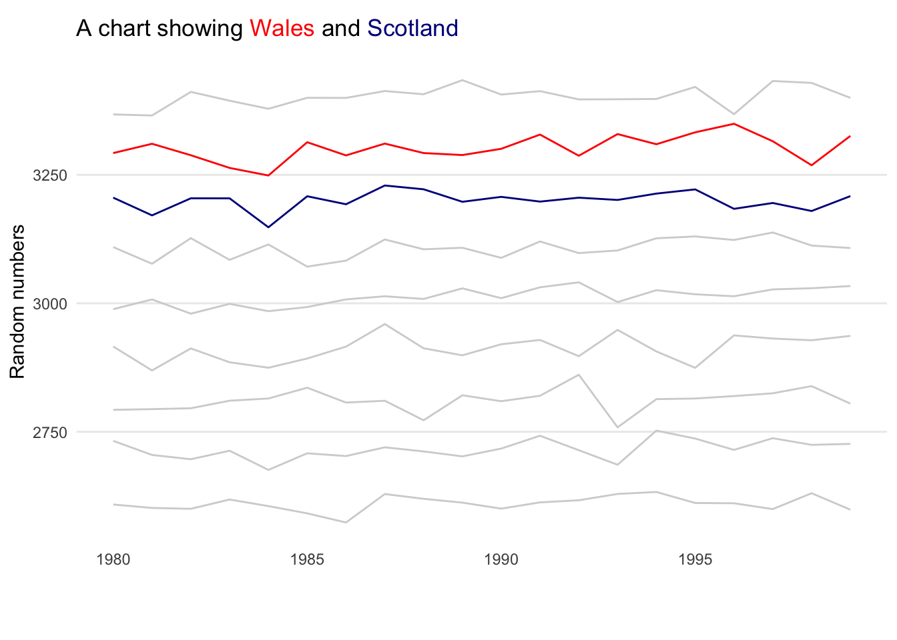
#11
5. Clarify with text
Think very carefully about titles, subtitles and labels.
You have 2 aims: make the chart interpretable and communicate your key messages.
I like to tell the viewer what the main message is in the title or subtitle.
# Format the data
uk_driver_deaths <- tibble(year = rep(1969:1984, each = 12),
month = rep(1:12, length(1969:1984)),
date = paste0(year, "-", month, "-01"),
deaths = as.vector(UKDriverDeaths)) |>
mutate(date = ymd(date)) # date class great for ggplot plots
# Plot
p_drivers <- ggplot(uk_driver_deaths, aes(x = date, y = deaths)) +
geom_line() +
labs(title = "Driver deaths fell after compulsory seatbelts were introduced",
subtitle = "Monthly data, Jan 1969 to Dec 1984",
x = "",
y = "Deaths") +
theme_minimal() +
theme(plot.title = element_text(margin = margin(t = 5, b = 10)),
axis.title.y = element_text(margin = margin(r = 20)),
panel.grid.major.x = element_blank(),
panel.grid.minor = element_blank(),
legend.position = "none")
p_drivers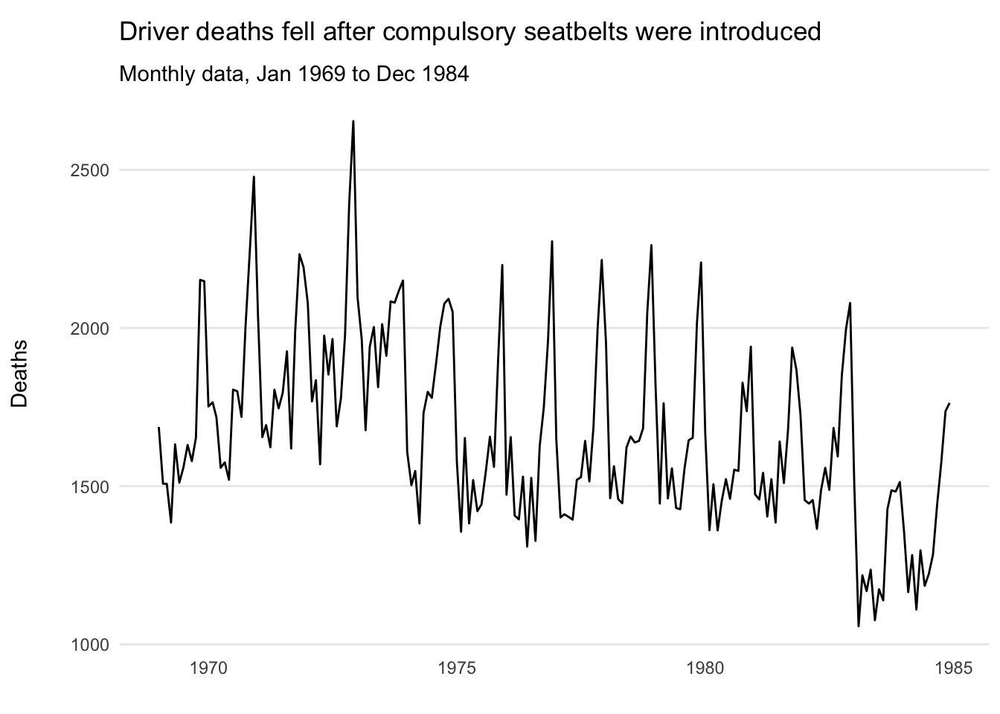
#12
Annotations are another great way to tell your story.
You can give the viewer key data and highlight interesting points. Same rules apply though - use them sparingly to maximise effect.
p_drivers_annotated <- p_drivers +
geom_vline(xintercept = as.Date("1983-01-31"), colour = "gray") +
annotate("text",
x = as.Date("1981-01-30"),
y = 2380,
label = "Compulsory seatbelts \n introduced 31 Jan 1983",
size = 3)
p_drivers_annotated
#13
7. Order deliberately
For categorical data with an inherent order, use factors to make sure they display correctly.
Another option is to order by size e.g. for bar charts.
tshirt_sales <- tibble(size = c("xs", "s", "m", "l", "xl"),
quantity = c(101, 345, 370, 359, 243))
# Default order
p_tshirt_no_order <- ggplot(tshirt_sales, aes(x = size, y = quantity)) +
geom_bar(stat = "identity") +
labs(title = "Default order - alphabetical")
tshirt_sales <- mutate(tshirt_sales,
size = factor(size, levels = size))
# Proper order
p_tshirt_order <- ggplot(tshirt_sales, aes(x = size, y = quantity)) +
geom_bar(stat = "identity") +
labs(title = "Ordered correctly - factor")
grid.arrange(p_tshirt_no_order, p_tshirt_order)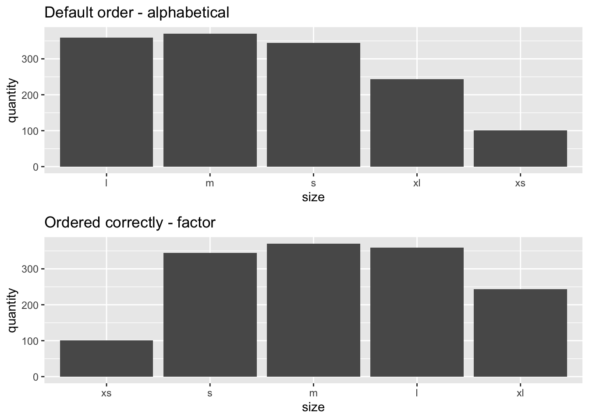
# Default order
fake |>
filter(year == 1999) |>
ggplot(aes(x = country, y = value)) +
geom_bar(stat = "identity")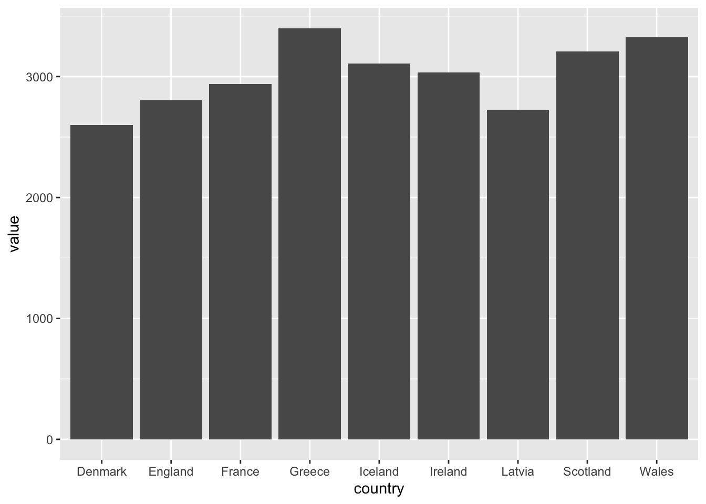
# Order low to high
fake |>
filter(year == 1999) |>
arrange(value) |>
mutate(country = factor(country, levels = country)) |>
ggplot(aes(x = country, y = value)) +
geom_bar(stat = "identity")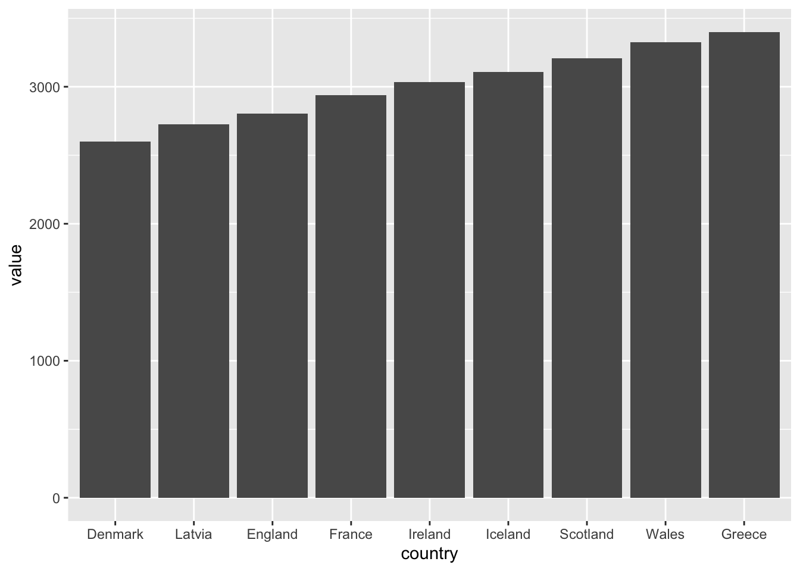
#14
8. Align titles
Aligning the plot to be in line with the labels below is an easy win for making it look good.
# Original plot
p_drivers_annotated 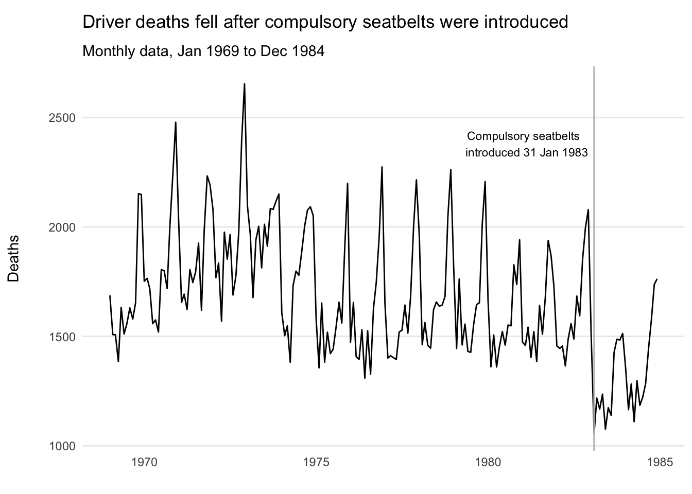
# Align titles to the plot not panel for a better finish
p_drivers_annotated + theme(plot.title.position = "plot")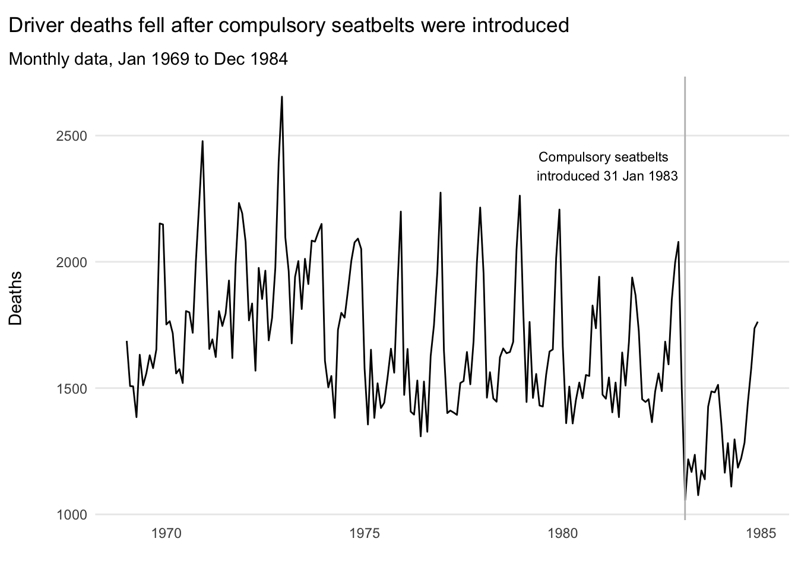
#15
Recap:
1. Use the right chart
2. Keep things simple
3. Give things room to breathe
4. Use colours effectively
5. Drop the legend
6. Clarify with text
7. Order deliberately
8. Align titles